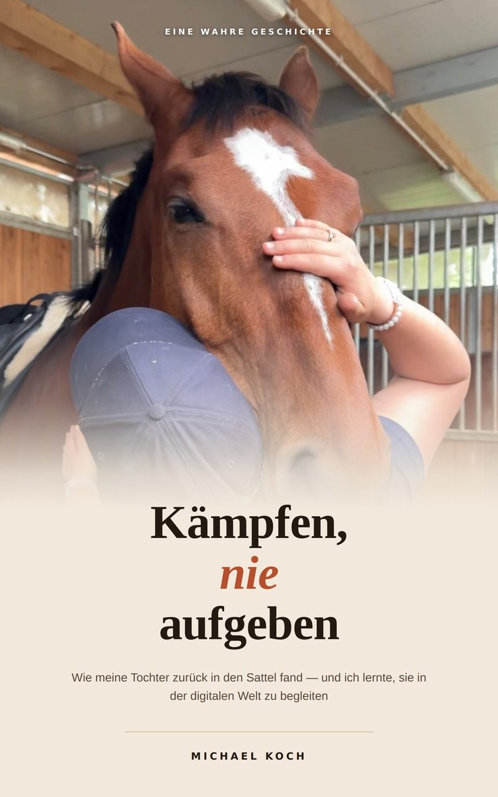

Kämpfen, nie aufgeben
Wie meine Tochter zurück in den Sattel fand – und ich lernte, sie in der digitalen Welt zu begleiten
Im November 2022 ruft der Rettungsdienst an.
Sarah ist in der Ausbildung zur Physiotherapeutin, sie reitet Turniere und arbeitet im Stall. Am Tag davor ist sie ohne Hilfsmittel über den Hof gelaufen.
Was folgt, sind zwei Jahre in Kliniken. Blutvergiftungen, multiresistente Keime, Quarantäne, ein Antibiotikum, das deutschlandweit zusammengesucht werden muss. Mehrmals steht es auf der Kippe. Geblieben sind eine Halbseitenlähmung, eine Orthese, ein Rollstuhl für lange Wege – und ein Pferd, das die Familie selbst auf die Welt geholt hat: My Milou.
Dieses Buch erzählt Sarahs Weg zurück in den Sattel. Bis zum ersten Turnier nach der Erkrankung. Bis zum 3. Platz in der Einzelwertung Grade III bei der Bayerischen Meisterschaft 2026. Bis zum 3. Platz im Finale des Para-Deux-Cups. Und bis zu dem Tag, an dem sie wieder über einen Sprung geht.
Es erzählt aber noch etwas. Sarah hat diesen Weg öffentlich gezeigt, auf TikTok und Instagram, vor Hunderttausenden. Ihr Vater kam später dazu – ohne Fachwissen, ohne Regelwerk, ohne eigenen Account. Der zweite Teil des Buches ist das, was er dabei gelernt hat: wie Sichtbarkeit entsteht, wie man Zahlen liest, ohne ihnen zu glauben, was Werbekennzeichnung wirklich verlangt, woran man erkennt, dass jemand Reichweite verkauft – und wo Begleitung aufhört und Kontrolle anfängt.
In jedem Kapitel des ersten Teils kommt Sarah selbst zu Wort, in den meisten auch ihre Mutter Carmen. Am Ende stehen neun Blätter zum Ausfüllen und Nachlesen, für Familien, die vor denselben Fragen stehen.
Eine wahre Geschichte. Kein Ratgeber von jemandem, der es immer schon wusste.
Teil I — Sarahs Weg
Vierzehn Kapitel von dem Anruf aus der Schule bis zum dritten Platz im Finale des Para-Deux-Cups. Mit Antworten von Sarah in jedem Kapitel, in den meisten auch von ihrer Mutter Carmen.
Teil II — Was ich gelernt habe
Acht Kapitel für Eltern, deren Kind öffentlich erzählt: Wie Sichtbarkeit entsteht. Wie man Zahlen liest, ohne ihnen zu glauben. Was Werbekennzeichnung verlangt. Woran man erkennt, dass jemand Reichweite verkauft.
Anhang — Vorlagen zum Ausfüllen
Neun Blätter: fünf Vorlagen wie Wochenplan und Familienvereinbarung, zwei ausgefüllte Beispiele, ein Merkblatt und die Quellen. Auch einzeln als PDF zum Ausdrucken.
Michael Koch
Michael Koch, Jahrgang 1978, lebt mit seiner Familie in Oberbayern. Er ist kein Autor, sondern Vater. Dieses Buch ist entstanden, weil er etwas nicht konnte – und es trotzdem lernen musste.
Buchangaben
- Titel
- Kämpfen, nie aufgeben
- Autor
- Michael Koch
- Format
- E-Book – bei CopeCart und Thalia als EPUB ohne Kopierschutz, bei Amazon als Kindle-E-Book
- Umfang
- Rund 24.700 Wörter, 13 Fotos
- Sprache
- Deutsch
- Erschienen
- 2026
- Herausgeber und Verlag
- Sarah Philine Koch
- ISBN
- 978-3-9829464-0-5 – EPUB bei CopeCart und Thalia